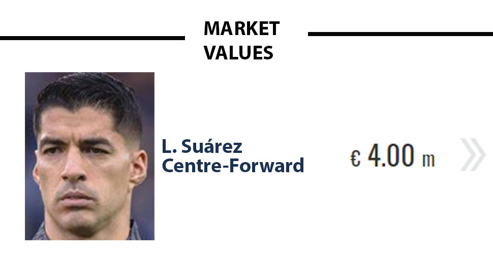

|
Luis Suárez joins Lionel Messi in MLS - But what can he add to Inter Miami CF?Speculations that Luis Suárez would join Inter Miami CF have been around ever since his friend Lionel Messi joined the Beckham-owned club last summer. Those speculations then received further fuel when Inter Miami CF announced that they would part ways with Venezuelan striker Josef Martínez. That move opened up a Designated Player (DP) spot for Inter Miami, making it easier to add Suárez to the roster. On Friday, two days before Christmas, the deal was finally made official with Inter Miami announcing that they had signed Suárez to a one-year contract on a free transfer from Grêmio. |
|
 “We are happy to welcome world class striker Luis Suarez to our club," owner Jorge Mas said. "Luis is a fierce competitor whose winning drive embodies what we want out of our players. We promised our fans we would pursue the world’s best players to build a squad that can compete at the highest echelons in the Americas. Coming off an award-winning season in Brazil, Luis will be a key addition to our roster. We will continue to be ambitious and always strive to pursue the Freedom to Dream." Co-owner and former England captain David Beckham was also delighted. "He joins a squad that is inspiring the next generation and we look forward to seeing him take to the field with both former teammates and young players from our Academy,” Beckham said.Whether Suárez will be signed as a Targeted Allocation Money (TAM) player or join as a DP remains to be seen; it is understood that Suárez has signed an initial one year contract with an option for 2025. Knee issues, in particular, have plagued the 36-year-old former Ajax, Liverpool, Barcelona, and Atlético Madrid star since he had surgery in 2020 (to Suárez’s injury history). The structure of the contract will also depend on Miami’s other transfer targets. In theory, Inter Miami could use the $2.4m in available TAM to buy down either Suárez, Gregore, or Sergio Busquets. Messi is the third DP but his contract is too sizeable to be bought down. Luis Suárez to MLS: What can he add to Inter Miami CF? The injury history and the contract aside, what could Suárez actually add to Inter Miami CF? Although already 36, Suárez highlighted this season for Grêmio that he still remains a dangerous striker. “Suárez has been brilliant,” Transfermarkt Area Manager Brazil Marcos Watts said. “Had a very strong year with Grêmio, especially in their Série A run.”The Uruguayan managed an impressive 17 goals and 11 assists in 33 Brazilian Série A games for Grêmio this season. Overall, Suárez was involved in 44% of Grêmio’s goals this season. In fact, only Atletico Mineiro’s Paulinho (20 goals) has scored more often. “Not only he was by far Grêmio's best player, but for a while Suárez gave the recently promoted team a title hope in Brazil's elite division,” Watts said. “He's the favorite to win the Player of the Season award and will live long in the memory of Brazilian football fans.” Hence, even with the knee issues in mind, Suárez remains a dangerous player, and his goalscoring record in Brazil—a league with a similarly difficult travel schedule than MLS—suggests that Suárez could have an immediate impact at Inter Miami, especially when paired with Messi. |